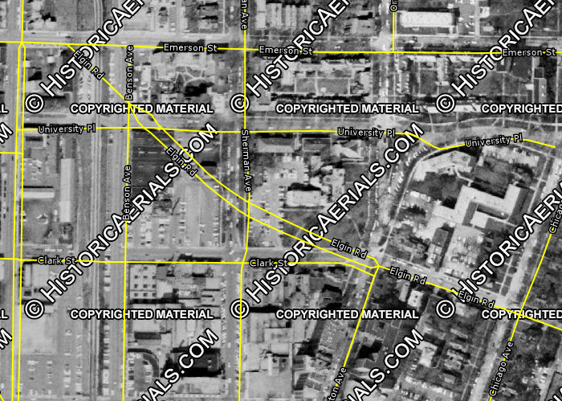
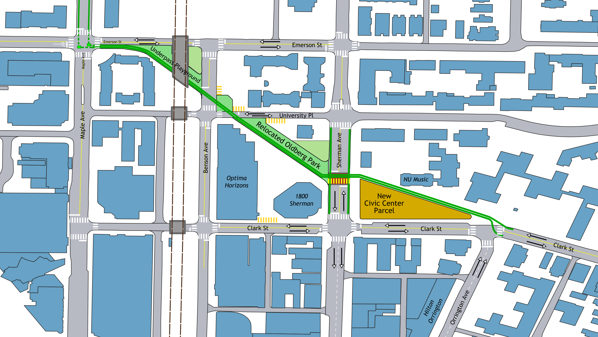

Elgin Road Civic Center
What if Evanston didn't have a 4-lane stroad cutting off its downtown from Northwestern and the residential area immediately north? I had this idea in early 2019. The plan as I submitted it is here, and recreated below.
Surprisingly, Alderwoman Fiske picked up my idea and actually took it to the public. She separated the animating cause (the new Civic Center) from the resulting changes (i.e. closing Elgin Rd to cars). The resulting proposal was met with opposition from local residents, and so for the time being the status quo remains.
Problem #1: Whither Elgin?
 Most of the city of Evanston is arranged on a grid of streets, creating a pleasantly dense, lively urban fabric. This grid is shifted by about 30 degrees on one small section of the city: the area roughly bounded by Clark St, Lake Michigan, Lake St, and Sherman Ave. This disjointedness creates three triangular parcels where the two grids converge, all three of which are currently parks and open community space. At Lake St. and Judson Ave, the triangular parcel is home to the First Congregational Church of Evanston, which has a pleasant green space in its rear. Fountain Square—the heart of the city—is at the second of these parcels, where Sherman and Orrington converge near Davis St. The third of these parcels is bounded by Elgin Rd, Clark St, and Sherman Ave, the current site of Arne & Mary Oldberg Park.
Most of the city of Evanston is arranged on a grid of streets, creating a pleasantly dense, lively urban fabric. This grid is shifted by about 30 degrees on one small section of the city: the area roughly bounded by Clark St, Lake Michigan, Lake St, and Sherman Ave. This disjointedness creates three triangular parcels where the two grids converge, all three of which are currently parks and open community space. At Lake St. and Judson Ave, the triangular parcel is home to the First Congregational Church of Evanston, which has a pleasant green space in its rear. Fountain Square—the heart of the city—is at the second of these parcels, where Sherman and Orrington converge near Davis St. The third of these parcels is bounded by Elgin Rd, Clark St, and Sherman Ave, the current site of Arne & Mary Oldberg Park.
At the first two of these sites, the street grid returns to the normal east/west and north/south configuration: Judson turns due south after crossing Lake St, and Orrington Ave is subsumed into Sherman Ave south of Davis. Elgin Road is an outlier, as it continues northwest at a sharp angle through an otherwise regular grid of streets until reaching Emerson St. This is the result of America’s (and Illinois’, and even Evanston’s) highway obsession of the 1950s and 1960s. As late as 1962 (within the lives of many Evanstonians!), aerial photos show Clark St and University Place continuing the city’s street grid uninterrupted from Maple to Orrington. By 1974, Elgin Road was in place, creating a stark divide between Downtown Evanston and Northwestern and the residential neighborhoods to the north.
As a result, Elgin Rd. acts as a traffic sewer—as 1960s IDOT engineers likely intended—and as a bypass for drivers wanting to go between points north/west of downtown Evanston and the lake or points south while avoiding the Downtown area to the extent possible.
Fifty years on, it’s important to ask: is Elgin Street working for current and future Evanstonians? Should the cohesiveness and safety of Downtown Evanston be sacrificed because IDOT engineers once called for State Route 58 to stretch from a growing exurb named Elgin right to the Lake Michigan beaches? What duty does Evanston have under the US Conference of Mayors Climate Protection Agreement to reduce the city’s carbon footprint, very much including reducing car travel within the city?
Despite existing for 50 years, no development has taken place along Elgin Road which interacts with the street. Along the entire half-mile stretch of road, the only building that faces Elgin Road in a meaningful way is the Northwestern School of music, which predates the road (and whose lawn was largely paved over to build the road in the first place).
As Evanston redesigns many of its streets to deprioritize car traffic, Elgin Road’s design becomes more and more egregious because of its location and because there is not actually enough traffic to justify its existence. According to the city’s Multi-Modal Transportation Plan (2009, PDF) only one third of its capacity is being used on the block between Orrington and Sherman—the vast majority of which are going westbound. That figure is only as high as it is because Clark Street between Orrington and Sherman is one way westbound and only accessible for vehicles turning left from Orrington.
Furthermore, the Adopted Downton Plan (2009, pdf) identified the intersection of Clark, Elgin, and Orrington as confusing and an unattractive pedestrian portal to downtown. It called for the realignment of the road, redeveloping the parcel at the southwest corner (the current Burger King location), and closing a block of Clark St to vehicle traffic. While this would no doubt make for an appealing gateway and enliven the area, Elgin Avenue would still disrupt the close urban fabric as it proceeds west toward Emerson.
In other cities, when a street is clearly overly wide and degrades the urban streetscape, city leaders have taken the initiative and reduced or eliminated vehicle access. New York has done this to stretches of Broadway; Chicago is considering doing this with Milwaukee Avenue through Logan Square. Evanston has done it in the past—removing the slip-lane from the intersection of McCormick Blvd and Green Bay Rd, and the recent reconfiguration of the Fountain Square area. In those examples, the ultimate result was the creation of more open social space for people, safe from the noise and threat of car traffic. With Elgin Road, Evanston has the opportunity to not only create these social spaces, but to finally solve a dilemma which has plagued the city government for nearly 30 years.
Problem #2: An Antique Civic Center
The city government moved into the former Maywood Academy building on July 4, 1979 (after approval by the city council in 1974). By that time the building was already nearly 80 years old. Despite upgrades since then, city government could stand to have a modern home. Since the early 1990s, Evanston city leaders have known about the need to fix the Loraine H. Morton Civic Center. In addition to the issues with the aging building itself, its location and design are extremely auto-oriented. While only 1200 feet from the Noyes St. Purple line station, it is out of walking distance to Evaston’s largest concentration of car-free households—namely Downtown Evanston. Additionally, the only nearby bus service is Pace Route 213’s stop at Simpson & Green Bay Rd (a 6 minute walk through the Civic Center Parking lot) or CTA Route 93’s stop at Emerson & Ridge (a 7 minute walk along Ridge Ave). Finally, the building’s immense setbacks—more than 75 feet on all sides—and lack of sidewalks on two sides make the entire block anti-pedestrian.
Various studies since the 90s have understood the poor urban form of the Civic Center’s current site and have called for redeveloping the site with buildings closer to the street which improve the pedestrian realm. Not all of these plans included keeping the Civic Center at its current location. In the 2008 Civic Center Test Fit Study (pdf), Option 6—a new building at an unspecified site—scored highest among the alternatives. The report included the important caveat that “in order for this option to be viable and for the city to move forward, a site would need to be specified.” (pg. 72)
That new site would have to be large enough for at least 135,000 square feet of space for the necessary offices, archives, and common areas. (2007 Civic Center Space Study Summary, pdf) It is no wonder why the city has not identified a suitable new site: the current six-story civic center has a footprint of about 32,000 square feet, and there aren’t any available parcels of that size in a good location—unless Evanston chooses to create a new parcel.
The Plan
Closing Elgin Road between Orrington and Emerson and reconfiguring the intersecting streets allows the city to solve both of these problems at once. This plan will explore the necessary transformations along this quarter-mile corridor from east to west.
<
Reconnecting Clark St
In order for Elgin St to be removed, westbound traffic on Clark between Orrington and Chicago must have an outlet. Clark St between Orrington and Sherman is currently one-way westbound, with two 12’ lanes—far too wide for an urban environment. Clark St can be converted to two-way traffic with 10’ lanes, widening sidewalks on both sides, and connecting with the existing two-way segments east of Orrington and west of Sherman. The barrier between Elgin and Clark that is currently in place (Figure 3) must be removed, and the intersection of Clark/Orrington reconfigured to shorten crossing distances to the extent possible.
New Civic Center Parcel
By closing off Elgin Road, the 65-foot wide right-of-way can be combined with Oldberg Park to create a new triangular parcel. With 170 feet of frontage along Sherman and 400 feet along Clark, that’s large enough for a building with a 34,000 square foot (0.78 acres) footprint—almost identical to the current Civic Center. (Figure 8) A 6-10 story Civic Center on this site would be in context with nearby development—the 10-story office building at 1800 Sherman, 16-story Optima Horizons, 5-story Northwestern Music Building, and 8-story Hilton Orrington—and provide at least the 135,000 square feet called for by previous studies.

Like the current site on Ridge Ave, the new Civic Center would be about 1200 feet from the nearest L station (Davis St). However, the new site is at most a 5 minute walk from a stop on every single bus route in Evanston, most of which stop at the corner of Benson and Church. This short walk is through the downtown core, so residents are more likely to be able to pair a visit to city government offices with other activities in the area. And the new building, with a to-be-determined design that productively interacts with the surrounding streetscape, will be more representative of Evanston’s connected, sustainable ethos than the current Civic Center.
Relocated Oldberg Park
Green space is currently at a premium in Downtown Evanston, and any plan like this should not diminish that further. Since the new Civic Center will occupy the current Oldberg Park site, new green space should be added nearby. This can be achieved by relocating Oldberg Park across Sherman, to the now-unused Elgin Rd. right-of-way between Sherman and University Place.
The new park area is virtually the exact same size as the current ½ acre park. This new location will naturally be livelier than the current site due to its adjacency to the hundreds of residents in the Optima Horizons building and workers at the 1800 Sherman building. It can be also beprogrammed to be more usable than the current design, which does not offer many places to sit and is dominated by the plantings along Elgin Rd (ironically there to protect parkgoers from the din of traffic). The existing green space at the northeast corner of Sherman & Elgin (adjacent to 1830 Sherman) can be integrated into the park, thereby enlarging it further, or left separate as its own private green space (depending on discussions with the property owner).
Reconnecting University Place
University Place is currently one-way between Sherman and Elgin, but its other segments are two-way. In an effort to reconnect the grid which Elgin St cut through, University Place would be extended across Benson Avenue into a continuous two-way street. To the extent the newly planted trees on the Optima parcel can be maintained that would be preferable, though 1-2 may have to be cut down. (Figure 9)
Turning University Pl and Benson into a four-way intersection would also help maintain vehicle access to the curb cuts for the properties in this area, with a small plaza at the new northeast corner. If 817 University Place (the former Las Palmas site) is redeveloped in the future, it should be done without the current curb cut, and should meld with the new plaza.
Underpass Playground
The third new parcel is the smallest of the three main tracts, consisting mostly of the roughly 60-foot Elgin Road right-of-way underneath the L tracks between Benson and Emerson. This space has natural protection from the elements, and so can function well as a playground or skateboard or dog park.
New Bike Path
The two-way protected bike path on Chicago Avenue is a wonderful piece of infrastructure, and combined with the lanes on Church and Davis Streets provides good access to the heart of Downtown Evanston. Adding a second east-west link expands the network of low-stress bike access, including to the new Civic Center and the residential area north along the Maple St bike route (which is as-yet unmarked). The new path should have dedicated signals where bicyclists and pedestrians cross streets, with the design sensitive to the geometry of each intersection.
Clark & Orrington Intersection
Westbound cyclists from Clark St. should have a smooth transition onto the path, although the area should have appropriate markings and design to prioritize pedestrian movement. Eastbound cyclists need to be afforded the opportunity to safely cross Clark St to reach the eastbound traffic lane. To do so, they should get a green signal during the same cycle as cars coming north on Orrington. However, cyclists should be given a leading green phase to make them more visible to drivers, with design and signage prioritizing cyclist movement.
Sherman Ave Road Diet
The Sherman Avenue roadway at the intersection with Elgin is currently nearly 60 feet wide. With Elgin St being removed, the turn lanes are no longer necessary, and the remaining lanes can be narrowed to a more appropriate ten feet. This creates a consistent corridor with Sherman Ave north of University Place, and allows for the addition of protected bike lanes, wider sidewalks, or an extended Civic Center parcel for a larger building. The parking lane in front of Oldberg Park can be converted to drop-off space or handicapped parking in front of the new Civic Center. (Figure 10)
A speed table (or “Wombat Crossing”) should be installed perpendicular to Sherman Ave at the north end of the new Civic Center Parcel to give clear priority to bicyclists and pedestrians in the area and to slow down car traffic as it enters Downtown Evanston. A traffic signal at this location should be synchronized to the signals at Benson & Clark, providing cyclists and pedestrians with a guaranteed green phase during every cycle.
University & Benson Reconfiguration
Bicyclists should proceed along the current Elgin Rd right-of-way across University and Benson, aided by dedicated traffic signals and Wombat Crossings in both cases. Westbound Vehicle traffic on University Pl should be stopped east of the bike path, which should be given a guaranteed green phase whenever vehicle traffic on Benson has a green. Similarly, southbound traffic on Benson should be stopped north of the path, with bicyclists seeing a green phase to cross Benson at the same time as vehicle traffic on University.
Emerson & Maple Intersection
Currently, eastbound car traffic along Emerson gains a second lane about 65’ west of Maple where curb parking is restricted. From this lane, cars can currently turn right onto Maple or continue straight into the slip lane toward Elgin Rd. With Elgin removed, the slip lane can be repurposed as a bi-directional bike lane.
A striped bike path along Maple should be installed befitting its status as a listed bike route, and bike boxes at the southeast and southwest corners should be installed to aid bicyclists in turning onto/out from the new bike path. West of Maple, the second eastbound lane on Emerson can be converted into a right-turn only lane. (While a curb bump-out to remove the lane would be preferable from a pedestrian point of view, the CTA #93 bus currently turns right at this intersection, so maintaining the turn lane is productive.)
Potential Hurdles to Implementation
Truck Routes
 A successful transportation network cannot focus solely on the movement of people—goods must be able to flow effectively as well. To that end, Evanston has identified specific truck routes throughout the city, including along Elgin Rd. Elgin Road is especially useful in two ways. First, it allows westbound truck traffic in tandem with eastbound traffic on Church St. Second, it has the tallest clearance of the three roads passing under the L tracks in this area at 14’3”.
A successful transportation network cannot focus solely on the movement of people—goods must be able to flow effectively as well. To that end, Evanston has identified specific truck routes throughout the city, including along Elgin Rd. Elgin Road is especially useful in two ways. First, it allows westbound truck traffic in tandem with eastbound traffic on Church St. Second, it has the tallest clearance of the three roads passing under the L tracks in this area at 14’3”.
To maintain westbound truck traffic in this area, the newly two-way Clark St. should be designated as a truck route and built accordingly. To avoid forcing trucks to make a tight right turn onto a narrowed Sherman Ave in front of the new Civic Center, the truck route should be extended along Clark to Benson, with Benson receiving any necessary upgrades between Church and Emerson to function as a truck route.
This leads to the corrective measure for issue of clearance. The Emerson St underpass has a clearance of 13’3”, which is sufficient for most truck traffic in Evanston. (The nearby Church St. underpass is just 12’3” yet functions suitably.) Truck traffic in both directions along Emerson can then choose whether to use Benson or Sherman for north-south travel.
Parking
As a result of generations of auto-dominated planning (including the construction of Elgin Road), the first—and sometimes only—concern of many citizens toward any potential change to the built environment is about parking. This is a tragic myopia in an age of climate crisis, but since the provision of public works relies on the consent of the local populace, it is nonetheless necessary to address parking in a proposal like this.
The single most important fact about this section of Downtown Evanston is that it is currently over-parked. Repeated studies have shown less-than-full occupancy of the public garages and private lots attached to many of the nearby buildings. The new Civic Center parcel is roughly equidistant from the Maple Ave, Church St, and Sherman Plaza garages, all of which consistently have available spaces during weekday business hours when the Civic Center would drive the most demand from visitors and employees. Additionally, many of those who would drive to the new Civic Center (not as a regular part of their commute) would likely have other business inDowntown Evanston anyway, and so would not actually increase the demand for parking in the area.
Secondly, as mentioned previously, the new location of the Civic Center is much more accessible by means other than by car. Nearby bus services, the L, and Evanston’s soon-to-expand Divvy footprint will allow anyone to reach the Civic Center without getting in a car. Although some current Civic Center employees may not have a convenient non-auto commuting option, more will than do at the current site. And, as staff turns over with time, new employees are more likely to find housing that allows for a convenient (and likely non-auto) commute.
Finally, there may be a need for some dedicated parking for vehicles in the City-owned fleet. Although a more centrally-located Civic Center may reduce the number of car trips taken by city staff in official vehicles, it is unlikely this would be brought to zero. Parking these vehicles can be achieved by reserving the parallel parking spaces along Clark St, though leaving these vehicles in the public right-of-way makes them more susceptible to damage and is likely to spark an outcry from Clark St shop owners. These vehicles could instead be parked in reserved spaces at one of the nearby lots with sufficient capacity, giving them protection from the elements while keeping them close by.
As a last resort, the design for the new Civic Center could include some parking on site. This is a poor choice not just on principle, but economically and from a safety perspective as well. On-site parking can cost upwards of $30,000 per space if it’s below ground. If it’s at grade or above it deadens the street life and reduces the usable floor area of the building, potentially pushing it taller and driving up total construction costs. And in either case, at least one curb cut is required, creating a conflict zone with pedestrians and bicyclists.